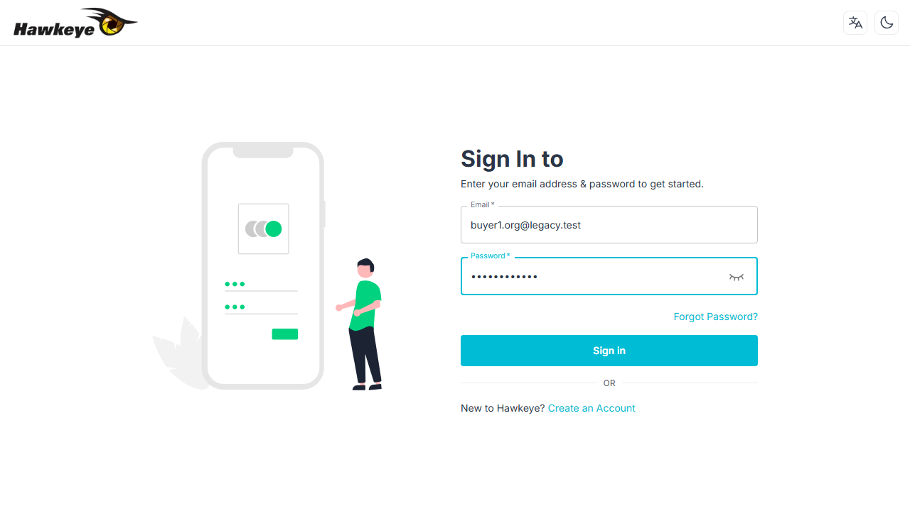
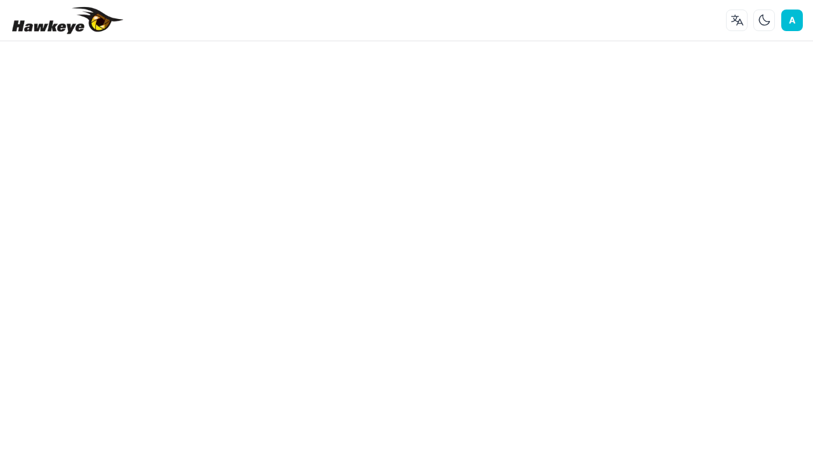
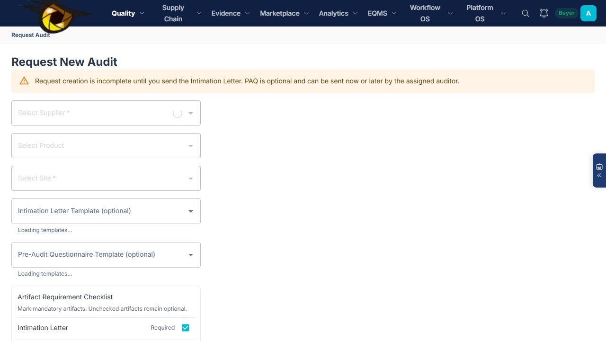
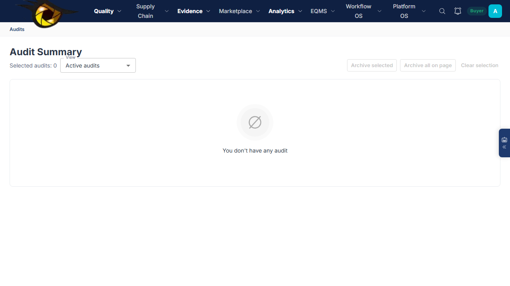

Figure 1: HawkEye login page — enter your email and password
This guide is for Pharma API Manufacturers who operate as both buyer and supplier in the supply chain. As a buyer, you audit your upstream API suppliers. As a supplier, you receive and respond to audits from your downstream customers.
| Setting | Value |
|---|---|
| Industry Profile | PHARMA_GMP |
| Module Pack | cGMP (ICH Q7 + FDA 21 CFR) |
| Active Modules | Audit Management, Supplier Quality, CAPA, Regulatory Intel, AI Assistant |
| Inactive Modules | Document Control, Change Control, Training, Deviation/NC, Complaints, Equipment, Management Review |
| User Roles | Buyer, Supplier, Auditor, Tenant Admin |
HawkEye is a multi-tenant quality management platform that connects buyers, suppliers, and auditors through a structured 8-phase audit workflow. As a Pharma API Manufacturer, you'll use the platform in two modes:
You initiate audits of your raw material suppliers, API intermediates vendors, and contract manufacturers. You assign auditors, track progress, review reports, and monitor supplier compliance.
Key pages: Request Audit, Audit Summary, FDA Dashboard, Supplier Risk
Your downstream customers (formulators, brand companies) audit your manufacturing sites. You receive intimation letters, accept audits, respond to questionnaires, and submit CAPA plans.
Key pages: Audit Summary (supplier view), Questionnaire, DigiLocker


As a Tenant Admin, invite team members under Users → Add User:
| Role | Who to invite | What they can do |
|---|---|---|
| buyer | QA/Regulatory team members | Create audit requests, assign auditors, review reports |
| supplier | Your site QA contacts | Respond to incoming audits, fill questionnaires |
| auditor | Internal or third-party auditors | Conduct audits, log findings, generate reports |
| tenant_admin | IT/Admin lead | Manage users, configure modules, system settings |
Go to /admin/module-config (Tenant Admin only) to enable/disable modules.
| Module | Status | Why |
|---|---|---|
| AUDIT_MANAGEMENT | ON | Core audit workflow — required |
| SUPPLIER_QUALITY | ON | Supplier profiles, products, sites |
| CAPA_MANAGEMENT | ON | Corrective actions from audit findings |
| REGULATORY_INTEL | ON | FDA inspection data (331K+ records) |
| AI_ASSISTANT | ON | AskHawk for domain questions |
| RFQ_PROCUREMENT | ON | Request for Quotation to audit firms |
| DOCUMENT_CONTROL | OFF | Not needed for audit-only config |
| CHANGE_CONTROL | OFF | Enable when ready for EQMS |
| EVENT_MANAGEMENT | OFF | Deviation/NC — enable for EQMS |
| TRAINING_MANAGEMENT | OFF | Enable for EQMS |
Customize terminology to match your organization's language:
| Term | Default | Pharma Recommendation |
|---|---|---|
| audit | Audit | GMP Audit |
| supplier | Supplier | Supplier (keep default) |
| finding | Finding | Deficiency |
| capa | CAPA | Corrective & Preventive Action |
| report | Report | Audit Report |
| product | Product | API / Drug Product |
| site | Site | Manufacturing Site |
/request-audit
/audits). Click it. Go to the Artifacts tab.
supplierVisible = true, trackStatus = "Audit intimation sent". The supplier can now see this audit in their Audit Summary.Supplier accepted intimation.Use the Progress tab on any audit to see the 8-phase stepper, milestone completion status, and SLA tracking. Each milestone shows who's responsible and when it's due.
When your customers audit your manufacturing sites, you operate in Supplier mode. Here's what you do at each phase:
/audits) once the buyer sends the intimation letter. You'll also receive an email/in-app notification.| Action | When to use | What happens |
|---|---|---|
| Accept | You agree to the proposed dates and scope | Calendar reservation created, buyer can now assign auditor |
| Propose Dates | The dates don't work but you're open to the audit | Buyer receives your proposed dates for renegotiation |
| Reject | You cannot accommodate this audit | Buyer is notified; audit is blocked until resolution |
/audits/[id]/questionnaire. Answer each section. Upload supporting documents. Save as draft, then Submit when ready.| Classification | Definition | CAPA Required? |
|---|---|---|
| Critical | Risk of producing product harmful to patient | Yes — within 15 days |
| Major | Significant departure from GMP standards | Yes — within 30 days |
| Minor | Minor departure, not directly impacting quality | Recommended — 60 days |
| Observation | Area for improvement | Optional |
| Outcome | Criteria |
|---|---|
| Satisfactory | No critical deficiencies, ≤5 major, all addressed |
| Conditionally Satisfactory | Major deficiencies present but CAPA plan accepted |
| Unsatisfactory | Critical deficiencies, rejection, or re-audit required |
| # | Phase | Owner | Key Artifacts | State Change |
|---|---|---|---|---|
| 1 | INITIATED | Buyer | Intimation Letter | trackStatus = "Request Created" |
| 2 | PREP | Supplier | Pre-Audit Questionnaire, Document Request List | supplierDecision = "ACCEPTED" |
| 3 | PLANNING | Auditor | Scope, Agenda, COI Declaration | auditorDecision = "ACCEPTED" |
| 4 | EXECUTION | Auditor | Execution Questionnaire, Opening Meeting Minutes | questionnaireStatus = "sent_to_supplier" |
| 5 | FINDINGS | Auditor | Findings Log, Preliminary Deficiency Report | questionnaireStatus = "review_completed" |
| 6 | CAPA | Supplier | CAPA Plan | CAPA submitted & approved |
| 7 | CLOSURE | Buyer | Final Report | trackStatus = "Closed", high_status = 5 |
| 8 | SURVEILLANCE | Auditor | (follow-up) | Re-audit scheduling |
331,000+ FDA inspections and 272,000+ citations searchable in real-time. Risk-score your suppliers based on inspection history before initiating audits.
AskHawk generates WHOPIR-format reports from questionnaire responses and findings. Auto-fills observations, maps to regulatory standards.
Pre-built templates for intimation letters, PAQ (60+ questions), execution questionnaires (98+ PSCI SAQ questions), and WHOPIR final reports.
Real-time 8-phase stepper with SLA monitoring. Each milestone shows who's responsible, when it's due, and whether it's on-time or overdue.
Every artifact change creates an immutable version record. Full audit trail with timestamps and user attribution — 21 CFR Part 11 ready.
In-app + email notifications at every handoff point. Configurable per event type and user preference.
The supplier must accept the intimation first. Check that supplierDecision = "ACCEPTED" on the audit. This follows the supplier-first flow mandated by industry practice.
You must send the Intimation Letter first. Go to Artifacts → INTIMATION_LETTER → Send to Supplier. This flips supplierVisible = true.
A template must be bound to the EXECUTION_QUESTIONNAIRE artifact. Go to the artifact detail page and select a template (e.g. Template 3: Full PSCI SAQ). Questions will auto-populate.
Go to /admin/module-config. Toggle on Document Control, Change Control, Training, etc. No data migration needed — modules activate immediately.
You don't switch modes. The same user can act as both. When you create audits, you're the buyer. When your customers' audits appear in your list, you respond as a supplier. The system routes based on who created the audit vs. who's the supplier.
Ensure you're on the Audit Summary page (/audits), not the role-specific placeholder pages. The unified Audit Summary shows all audits regardless of role.
| Frontend | https://hawkeye-frontend-dev-chi.vercel.app |
| Backend API | https://hawkeye-backend-dev.vercel.app |
| API Docs (Swagger) | https://hawkeye-backend-dev.vercel.app/api-docs |
| Page | Path | Who uses it |
|---|---|---|
| Login | /auth/signin | Everyone |
| Audit Summary | /audits | All roles — unified list |
| Request Audit | /request-audit | Buyer |
| Audit Detail | /audits/[id] | All roles |
| Artifacts | /audits/[id]/artifacts | All roles |
| Questionnaire | /audits/[id]/questionnaire | Supplier fills, Auditor reviews |
| Progress | /audits/[id]/progress | All roles — milestone tracking |
| Report | /audits/[id]/report | Auditor generates, Buyer reviews |
| FDA Dashboard | /fda-dashboard | Buyer — regulatory intel |
For technical support, contact your HawkEye account manager or email support@hawkeyesmart.com.
HawkEye Platform — Pharma API Manufacturer User Guide (Audit Only)
Version 1.0 · April 2026 · Confidential
Export: Ctrl+P → A4 Portrait → Background Graphics ON → Save as PDF